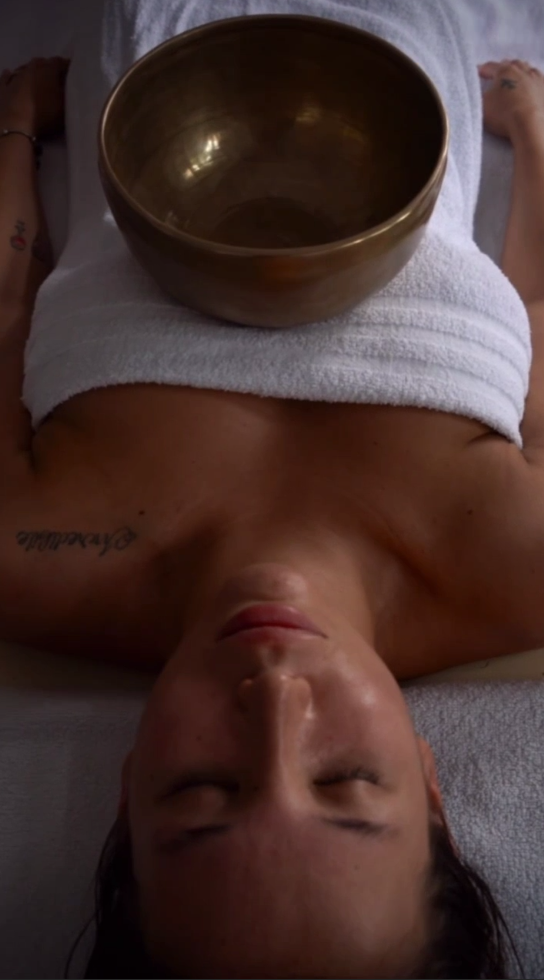
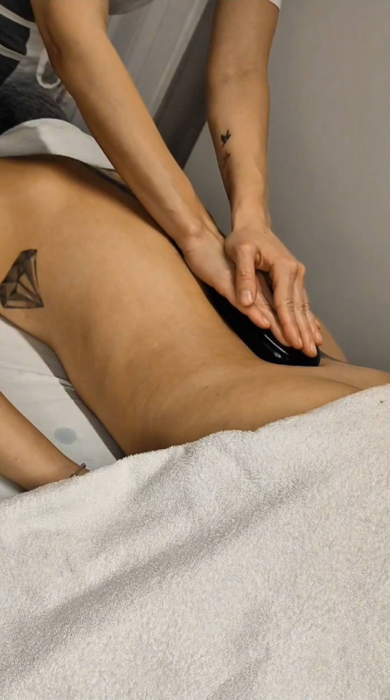
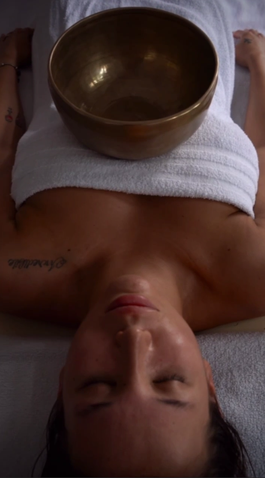
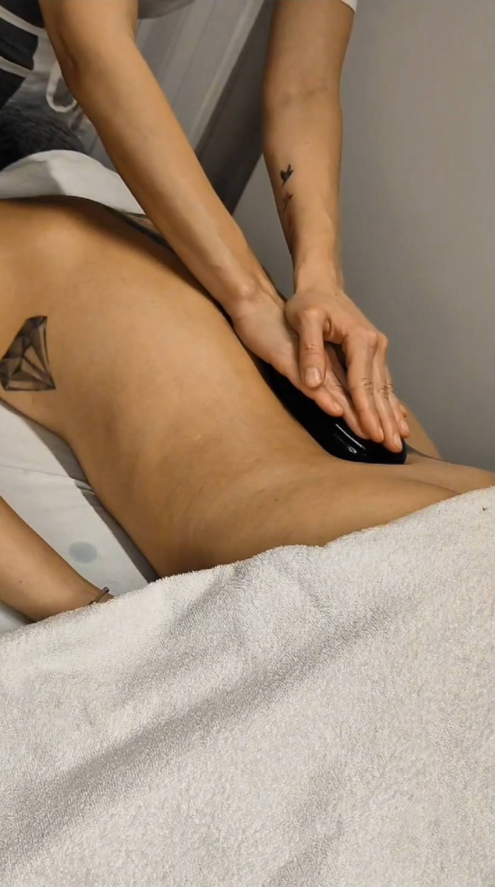

Massaggi Trieste
Il tuo punto di riferimento per il Massaggio a Trieste: Relax, Cura e Benessere
🌿 I Migliori Massaggi a Trieste per il Tuo Equilibrio
Il nostro studio offre una gamma completa e raffinata di massaggi Trieste, studiati per ristabilire l'equilibrio psicofisico profondo. Sappiamo quanto sia importante concedersi un momento di pausa nella frenesia quotidiana. Se stai cercando un massaggio a Trieste professionale, eseguito con competenza, sensibilità e passione, sei arrivato nel posto giusto.
Ogni trattamento è un'esperienza unica, personalizzata in base alle tue necessità del momento. Che tu abbia bisogno di sciogliere tensioni muscolari, drenare liquidi in eccesso o semplicemente staccare la spina, abbiamo il massaggio a trieste perfetto per te.
- 🌸 Massaggio Olistico: L'Armonia Totale
Considerato il re dei trattamenti benessere, questo massaggio a Trieste considera la persona nella sua interezza: mente, corpo e spirito. Non lavora solo sui muscoli, ma anche sulle energie sottili. Attraverso manovre fluide, avvolgenti e ritmiche, scioglie i blocchi energetici ed emotivi, donando una profonda sensazione di pace interiore e riconnessione con sé stessi. - ✨ Massaggio Modellante: Silhouette Definita
Vuoi ridefinire la tua silhouette e tonificare i tessuti? Il nostro massaggio modellante utilizza tecniche energiche, veloci e profonde per stimolare il metabolismo del tessuto adiposo e riattivare la circolazione. È uno dei massaggi Trieste più richiesti e apprezzati da chi desidera un corpo più sodo, compatto e vitale. - 💧 Tecniche Drenanti: Leggerezza Immediata
La soluzione ideale contro gonfiori, pesantezza e ritenzione idrica. Attraverso pressioni delicate, lente e ritmiche, stimoliamo il sistema linfatico per favorire l'eliminazione naturale delle tossine e dei liquidi in eccesso. Un vero tocco di leggerezza per le tue gambe e per tutto l'organismo. - 😌 Antistress (Massaggi Rilassanti): Pace per la Mente
Lascia fuori dalla porta le preoccupazioni, l'ansia e lo stress quotidiano. Questo massaggio utilizza movimenti lenti, lunghi e profondi per calmare il sistema nervoso, abbassare i livelli di cortisolo e migliorare significativamente la qualità del sonno. È senza dubbio il miglior massaggio a Trieste per chi ha bisogno di staccare la spina e rigenerarsi completamente. - 🧘♀️ Massaggio Articolare: Libertà di Movimento
Dedicato a chi sente rigidità, blocchi o limitazioni nei movimenti. Attraverso mobilizzazioni passive, trazioni dolci e stretching assistito, questo trattamento migliora la flessibilità, l'elasticità e l'ampiezza di movimento delle articolazioni, restituendo scioltezza e libertà al corpo. - 👣 Riflessologia Plantare: Il Benessere dai Piedi
Un'antica arte di guarigione che passa attraverso i piedi, specchio del nostro corpo. Stimolando punti specifici (punti riflessi) sulla pianta del piede, andiamo ad agire di riflesso sugli organi interni e sui sistemi corporei, promuovendo l'equilibrio e l'autoguarigione dell'intero organismo. - 🔥 Massaggio con Pietre Calde (Hot Stone): Calore Curativo
Un rituale avvolgente e primordiale dove il calore delle pietre vulcaniche levigate penetra in profondità nei muscoli. Il calore scioglie le contratture più ostinate, migliora la circolazione e induce uno stato di rilassamento meditativo assoluto. Un'esperienza sensoriale indimenticabile tra i nostri massaggi a trieste.
🕊 Esclusivo: Fly Massage - Unico a Trieste
Massaggio in Amaca (Fly Massage)
Siamo orgogliosi di essere gli unici a proporre questo innovativo e straordinario massaggio a Trieste. Cullati dalla morbida amaca del Fly Yoga, riceverete un trattamento in completa sospensione.
L'assenza di gravità permette un rilassamento muscolare immediato e profondo, impossibile da ottenere sul lettino tradizionale. Il dolce dondolio riporta a sensazioni ancestrali di sicurezza, protezione e pace (simili al grembo materno). È un'esperienza sensoriale completa che unisce i benefici del massaggio manuale alla decompressione vertebrale passiva. Se cerchi qualcosa di veramente speciale tra i massaggi trieste, il Fly Massage è da provare assolutamente.
 


